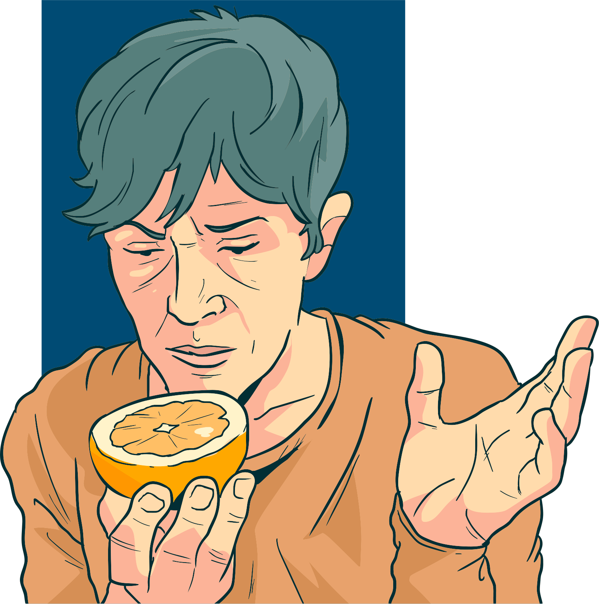

Têm sido comuns relatos de alterações no paladar e no olfato, dor no peito ou nas costas, dor de cabeça, dor nos olhos e dor de garganta. Também é importante mencionar que a febre não é obrigatória, sendo muitas vezes ausente, principalmente em pessoas mais jovens e pacientes não diagnosticados com nenhum tipo de doença crônica.
Todos esses sintomas são considerados leves e não indicam a necessidade de internação.